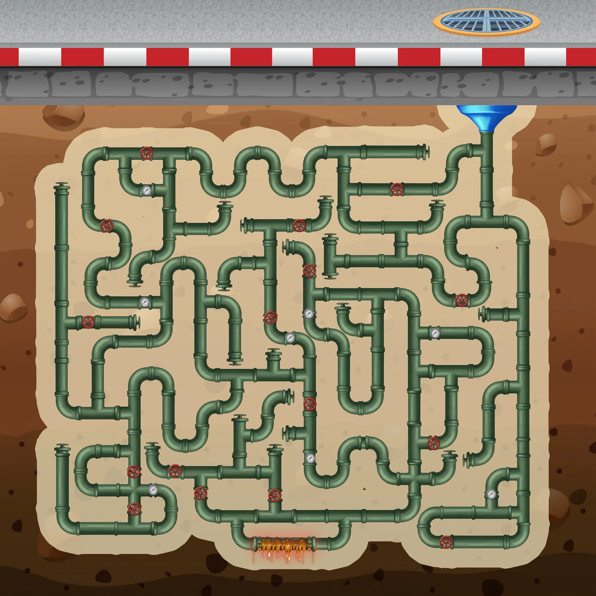
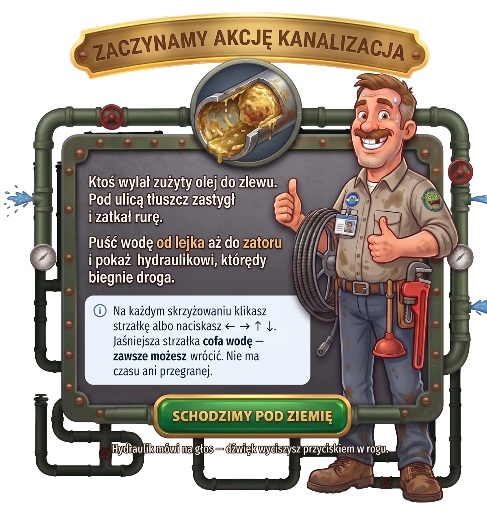
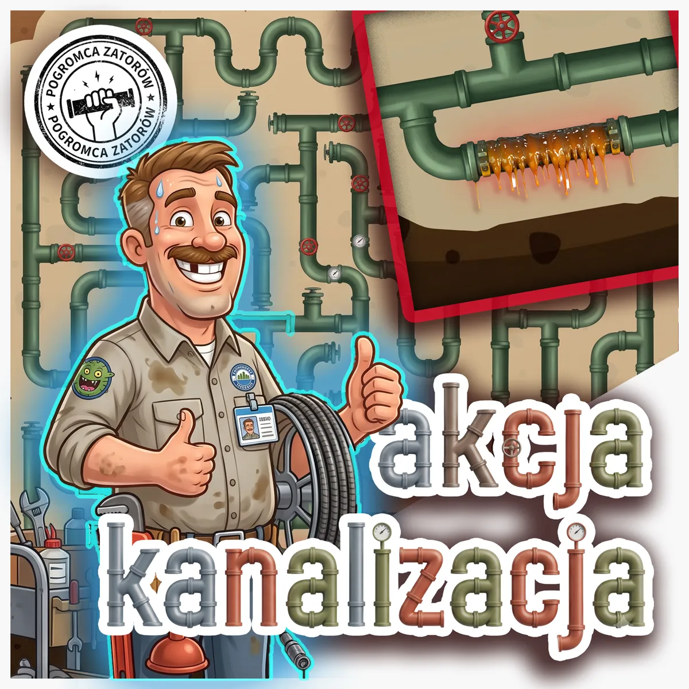
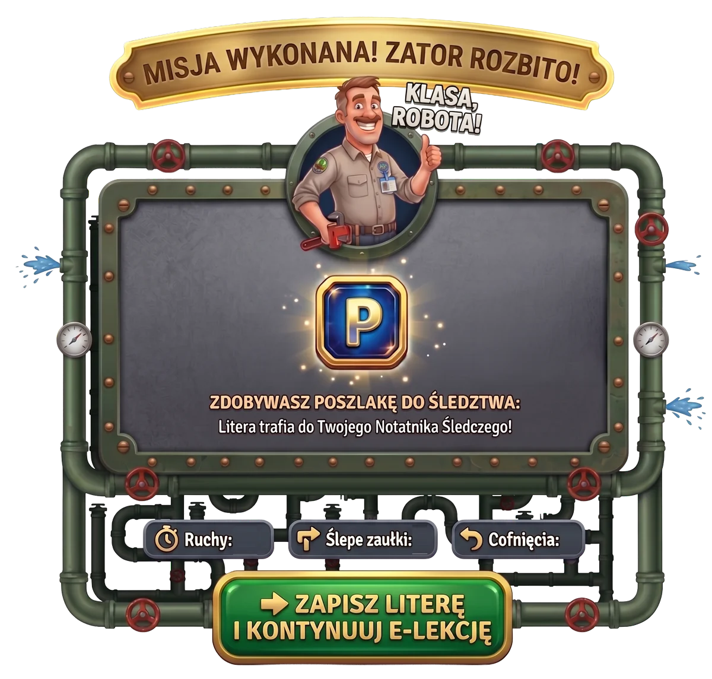
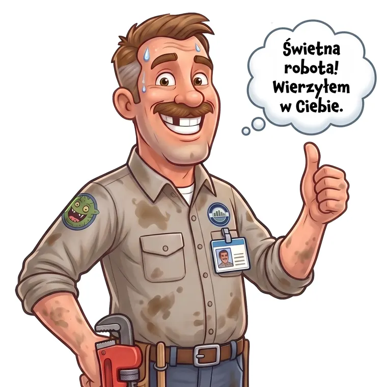

RUCHY: 0 · COFNIĘCIA: 0

Kliknij strzałkę, żeby puścić wodę w tę stronę.

Ktoś wylał zużyty olej do zlewu. Pod ulicą tłuszcz zastygł i zatkał rurę. Puść wodę od lejka aż do zatoru i pokaż hydraulikowi, którędy biegnie droga.
Na każdym skrzyżowaniu klikasz strzałkę albo naciskasz strzałki na klawiaturze. Jaśniejsza strzałka cofa wodę — zawsze możesz wrócić. Nie ma czasu ani przegranej.
Hydraulik mówi na głos — dźwięk wyciszysz przyciskiem w rogu.

Ktoś wylał zużyty olej do zlewu. Pod ulicą tłuszcz zastygł i zatkał rurę. Puść wodę od lejka aż do zatoru i pokaż hydraulikowi, którędy biegnie droga.
Na każdym skrzyżowaniu klikasz strzałkę albo naciskasz ← → ↑ ↓. Jaśniejsza strzałka cofa wodę — zawsze możesz wrócić. Nie ma czasu ani przegranej.
Hydraulik mówi na głos — dźwięk wyciszysz przyciskiem w rogu.

Tłuszcz z jednego zlewu potrafi zatkać rurę całej ulicy — dlatego zużyty olej trafia do butelki i Olejomatu, nie do kanalizacji.

Woda dotarła do zatoru. Tłuszcz z jednego zlewu potrafi zatkać rurę całej ulicy — dlatego zużyty olej trafia do butelki i Olejomatu, nie do kanalizacji.
Zdobywasz poszlakę do śledztwa:
Litera trafia do Twojego Notatnika Śledczego.